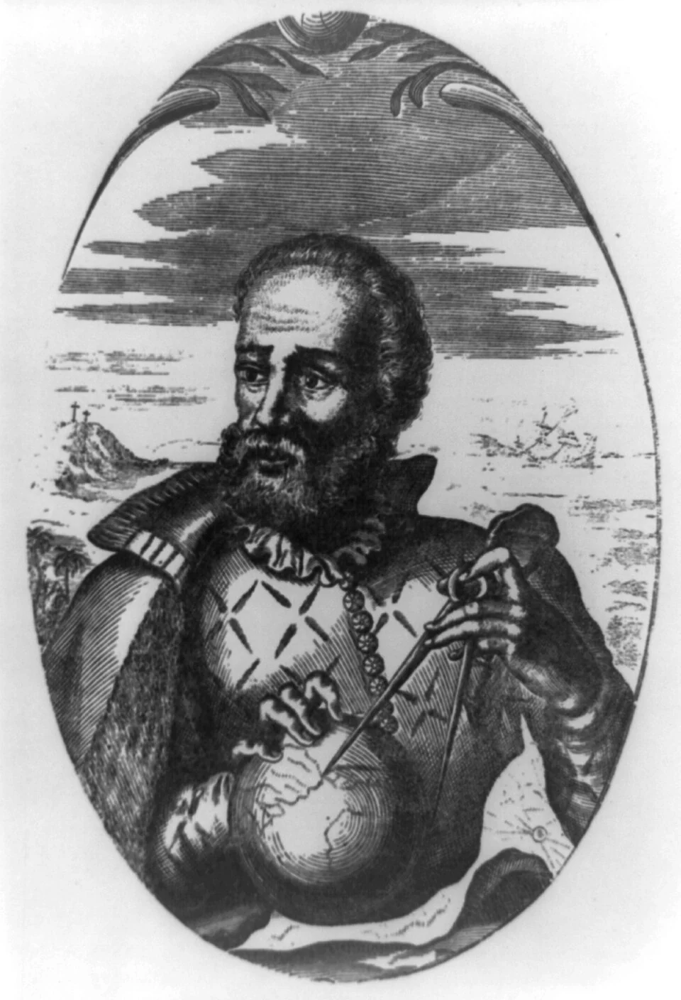

Macellan dünyanın çevresini dolaşan ilk seferin komutanıydı; fakat bu yolculuğu tamamlayamadı. Portekizli denizci, İspanya adına çıktığı 1519 seferinde Güney Amerika'nın güneyindeki geçitten Pasifik'e ulaştı ve 1521'de Filipinler'de öldü. Beş gemiyle başlayan yolculuğu, Juan Sebastián Elcano komutasındaki Victoria'nın 1522'de İspanya'ya dönmesiyle tamamlandı. Seferin öyküsü yalnızca keşiflerden değil; krallıklar arasındaki rekabetten, mürettebat isyanlarından ve yerel siyasi ittifakların sonuçlarından da oluşur.
Portekizli denizciden İspanya'nın kaptanına
Fernão de Magalhães, bugün yaygın olarak Ferdinand Macellan adıyla bilinir. Yaklaşık 1480'de Portekiz'de doğdu ve genç yaşta Portekiz'in Asya seferlerinde görev aldı. Hint Okyanusu'na ve Malakka'ya uzanan bu deneyim, onu uzak deniz yolları ve baharat ticareti konusunda tecrübeli bir denizci yaptı. O dönemde karanfil ve küçük Hindistan cevizi gibi ürünlerin kaynağı olan Moluccas'a ulaşmak, Avrupa krallıkları için büyük ekonomik ve siyasi önem taşıyordu.
Macellan, Moluccas'a doğudan değil batıdan ulaşacak bir rota önerdi. Portekiz Kralı I. Manuel'den destek alamayınca 1517'de İspanya'ya geçti. İspanya Kralı I. Carlos, projeyi kabul ederek ona beş gemi ve yaklaşık 270 kişilik bir mürettebat sağladı. Bu karar yalnızca bir denizcilik girişimi değildi: İspanya ve Portekiz, denizaşırı ticaret yolları ile yeni topraklar üzerindeki hak iddiaları konusunda rekabet ediyordu. Macellan'ın Portekizli kimliği de İspanyol kaptanların ona duyduğu güveni baştan zedeledi.
1494 tarihli Tordesillas Antlaşması, İspanya ile Portekiz'in denizaşırı iddialarını bir sınır çizgisine göre paylaştırmayı amaçlamıştı. Fakat dünyanın öte tarafındaki Moluccas'ın bu çizginin hangi tarafında kaldığı, boylamı kesin biçimde ölçmenin güç olduğu bir çağda tartışmalıydı. Macellan'ın batı rotası bu yüzden yalnızca bir ticaret yolu arayışı değil, İspanya'nın baharat adaları üzerindeki iddiasını güçlendirme girişimiydi. Seferin başarısı, kimin hangi adaya hak iddia edebileceği sorusunu da beraberinde getirecekti.
Bu rekabeti, Avrupa'daki güç mücadelelerinin daha geniş bağlamında siyasi tarihe genel bakışımızda ele alıyoruz. Macellan'ın seferi de dönemin devlet rekabetinden bağımsız, yalnızca kişisel cesaretle açıklanabilecek bir yolculuk değildi.
San Julián'da isyan: komutan kendi filosuna karşı
Filo Eylül 1519'da İspanya'dan ayrıldı ve Güney Amerika kıyıları boyunca güneye ilerledi. Aranan geçidin nerede olduğu bilinmiyordu; soğuk hava, erzak kaygısı ve yolculuğun uzaması mürettebatın sabrını tüketiyordu. 1520'de San Julián limanında İspanyol kaptanların bir bölümü Macellan'a karşı ayaklandı. İsyanın arkasında yalnızca sert koşullar değil, Portekizli bir komutanın İspanyol filosunu yönetmesine duyulan siyasi güvensizlik de vardı.
Macellan isyanı bastırdı. Kaptan Gaspar de Quesada idam edildi; Juan de Cartagena ise karaya bırakıldı. Bu sert kararlar filonun dağılmasını önledi, ancak komutanla mürettebat arasındaki gerilimi ortadan kaldırmadı. Sefer sırasında Santiago fırtınada parçalandı; boğazı geçerken San Antonio da filodan ayrılıp İspanya'ya döndü. Beş gemilik filo, yola çıktıktan yaklaşık bir yıl sonra üç gemiye düşmüştü.
Macellan Boğazı'ndan Pasifik'e
Macellan, 1520 sonbaharında Güney Amerika'nın güney ucunda Atlantik'ten batıya geçiş sağlayan bir boğaz buldu. Dar kanallar, sert rüzgârlar ve karmaşık kıyılar yüzünden geçiş haftalar sürdü. Bugün Macellan Boğazı olarak anılan bu geçit, Avrupa denizciliği açısından yeni bir rota ortaya koydu. Navigasyon araçlarının ve haritaların deniz yolculuklarını nasıl dönüştürdüğünü teknoloji tarihindeki dönüm noktaları yazımızda da inceliyoruz.

Boğazın batısında karşılaştıkları büyük okyanusa Macellan, görece sakin görünen sular nedeniyle Mar Pacifico adını verdi. Fakat okyanus adının çağrıştırdığı kadar kolay değildi. Filo, Pasifik'i geçerken yaklaşık üç ay boyunca yiyecek ve su sıkıntısı çekti; hastalık ve açlık mürettebatı zayıflattı. Macellan, okyanusu aşmanın ne kadar uzun süreceğini doğru tahmin edememişti.
Pigafetta'nın günlüğü, bu uzun geçişi yalnızca haritadaki bir çizgi olarak değil, gemide yaşayan insanların deneyimi olarak da kaydeder: erzak azaldı, hastalıklar yayıldı ve mürettebat karaya çıkıp su ile yiyecek bulmayı bekledi. Filo önce Guam'a, ardından Filipinler'e ulaştığında, adalar arasındaki deniz bilgisi ve yerel ticaret ağları Avrupalı denizcilerin yolculuğunu mümkün kıldı. Bu karşılaşmaları yalnızca Macellan'ın rotası üzerinden anlatmak, bölge halklarının kendi dünyasını ve hareketliliğini arka plana iter.
Yolculuğun haritasını çıkarmak da bugünkü anlamda kesin koordinatlar kaydetmek değildi. Denizciler yön bulmak için pusula ve gök cisimlerinden yararlanıyor, hız ve yön tahminlerinden hareketle kat edilen mesafeyi hesaplıyordu. Enlem hakkında gözlem yapılabilse de boylamı güvenilir biçimde belirlemek çok daha zordu; hassas deniz kronometreleri henüz yoktu. Bu yüzden bir boğazı bulmak, onu geçmek ve rotayı başkalarının izleyebileceği biçimde kaydetmek ayrı ayrı zorluklardı.
Macellan Pasifik'i keşfeden ilk insan değildi: Okyanus, kıyılarında ve adalarında yaşayan halklar tarafından çok uzun zamandır biliniyordu. Seferin tarihsel önemi, Avrupalıların Güney Amerika'nın güneyinden geçerek Pasifik'i aşması ve Avrupa'dan batıya uzanan güzergâhı kayda geçirmesiydi. Filipinler'e ulaştıklarında da orayı “insanlık için keşfetmiş” olmadılar; takımadalar yüzyıllardır yerleşimlere ve siyasi topluluklara ev sahipliği yapıyordu.
Cebu ittifakı ve Mactan'daki ölüm
Filo 1521'de Filipinler'e ulaştı. Cebu'da Macellan yerel yöneticilerle ilişki kurdu; ticaret, siyasi ittifak ve Hristiyanlığa geçiş seferin bölgedeki faaliyetlerini şekillendirdi. Cebu hükümdarının Mactan'la yaşadığı anlaşmazlıkta Macellan'dan yardım istediği aktarılır. Mactan'ın lideri Lapulapu ise İspanyol komutanın otoritesini kabul etmedi.
Macellan, Mactan'a karşı küçük bir kuvvetle harekete geçti. Antonio Pigafetta'nın sefer sırasında tuttuğu anlatıya göre, gemiler sığ sularda kıyıya yeterince yaklaşamadı; karaya çıkan adamlar yerel savaşçıların saldırısıyla karşılaştı. Pigafetta, Macellan'ın bacağından yaralandığını ve geri çekilme sırasında çevresinin sarıldığını yazar. Macellan 27 Nisan 1521'de öldürüldü. Pigafetta'nın anlatısında cesedini geri almak mümkün olmaz; olayın ayrıntıları, seferin tek bir Avrupalı tanığın gözünden aktarıldığı dikkate alınarak okunmalıdır.
Gerilim Macellan'ın ölümüyle bitmedi. Pigafetta, Cebu hükümdarının yeni İspanyol yöneticileri bir ziyafete çağırdığını; kendisinin yüzündeki yaradan dolayı gemide kaldığını ve karaya gidenlerin öldürüldüğünü anlatır. Günlük, tercüman Enrique'nin olayda rolü olduğuna dair bir suçlamayı da aktarır. Bu iddianın arka planını ve tarafların niyetini bağımsız kaynaklarla doğrulamak zordur; bu nedenle kesinleşmiş bir komplo gibi değil, hayatta kalan bir sefer katılımcısının tanıklığı olarak değerlendirilmelidir.
Mactan'daki yenilgi, ateşli silahların ve gemilerin her çatışmada kesin üstünlük sağlayacağı varsayımını boşa çıkardı. Macellan, yerel rekabetin içine girerek taraflardan biri olmuş; askeri müdahalesinin riskini de olduğundan küçük görmüştü. Onun ölümü, hem seferin komutasını hem Cebu'da kurduğu siyasi düzeni sarstı.
Macellan'dan sonra: dünyayı dolaşan sefer
Komutanın ölümünden sonra yolculuk devam etti. Azalan mürettebat nedeniyle Concepción yakıldı; kalan gemiler Moluccas'a ulaşıp baharat yükledi. Sonunda yalnızca Victoria, Elcano'nun komutasında batıya dönerek 1522'de İspanya'ya vardı. Yaklaşık 270 kişiyle başlayan filodan 18 kişi bu gemiyle geri döndü.
Bu nedenle “Macellan dünyanın çevresini dolaşan ilk kişiydi” demek yanıltıcıdır. Dünyanın çevresini dolaşan, Macellan'ın başlattığı ve Elcano'nun tamamladığı seferdi. Bu yolculuk Dünya'nın yuvarlak olduğunu ilk kez kanıtlamadı; bu bilgi seferden önce de biliniyordu. Sefer, okyanusların ve kıtalar arasındaki mesafelerin Avrupalıların tahmin ettiğinden ne kadar büyük olduğunu gösterdi ve deniz yoluyla dünya çevresinde kesintisiz bir rota kurulabileceğini belgeledi.
Yolculuğun tamamlanması, rotanın düzenli ticaret için elverişli olduğu anlamına da gelmiyordu. Batıdan Moluccas'a giden güzergâh çok uzun, tehlikeli ve erzak açısından zordu; dönüşte de Victoria tek başına ve büyük kayıplarla ilerledi. Sefer, İspanya'ya baharat taşıdı ve coğrafi bilgiyi genişletti, ancak Portekiz'in doğu rotasıyla rekabet edebilecek kolay bir ticaret hattı kurmadı. Keşif başarısı ile ekonomik sürdürülebilirlik aynı şey değildi.
Keşif, iktidar ve anlatının sınırları
Macellan'ın hikâyesi tek bir kahramanın bilinmeyene atılması olarak anlatıldığında, seferin arkasındaki imparatorluk rekabeti ve Filipinler'deki yerel siyasi aktörler görünmez hâle gelir. Seferin Avrupalılar için yeni olan rotaları, bölge halklarının daha önce bilmediği yerler değildi. Benzer şekilde, Pigafetta'nın günlüğü paha biçilmez bir birincil kaynak olsa da mürettebatın, yerel toplulukların ve çatışmaların tüm taraflarını eşit biçimde temsil etmez.
Pigafetta'nın kaydı yine de yalnızca kaptanların kararlarını anlatmaz. Sefer güzergâhındaki adaları, karşılaşılan ürünleri ve bazı yerel sözcükleri de not eder; böylece tarihçiler için dönemin deniz yolculuğuna ve Avrupalıların karşılaşmalarına dair eşsiz ayrıntılar bırakır. Fakat bir gözlemcinin yazdığı, onun anlayabildiği ve hatırlamayı seçtiği kadardır. Günlük, yerel toplumların kendi anlatılarının yerine geçmez; seferin Avrupa merkezli bakışını da görünür kılar.
Macellan, boğazın geçilmesine ve Pasifik rotasının kayda geçirilmesine öncülük etti; fakat kendi seferinin son durağı Mactan oldu. Bu yolculuğun mirası, coğrafi bilginin genişlemesi kadar, keşif çağının ticaret, iktidar ve sömürgecilikle iç içe geçmiş tarihini de hatırlatır.
Kaynaklar
- Antonio Pigafetta. Primo viaggio intorno al mondo (yaklaşık 1525); seferin birincil tanıklığı. İngilizce çeviri ve açıklamalı metin: Blair ve Robertson, The Philippine Islands, 1493–1898, cilt 33. Project Gutenberg dijital nüshası.
- Encyclopaedia Britannica. Ferdinand Magellan. Biyografi, seferin rotası ve Macellan'ın Mactan'daki ölümü. Britannica.
- Encyclopaedia Britannica. Treaty of Tordesillas. İspanya ve Portekiz'in denizaşırı iddialarını bölen 1494 antlaşmasının tarihsel bağlamı. Britannica.
- Royal Museums Greenwich. Ferdinand Magellan. Sefer ve denizcilik tarihi bağlamı. Royal Museums Greenwich.
- HISTORY.com Editors. Ferdinand Magellan. Sefer kronolojisi, isyan, Pasifik geçişi ve 1522'de dönüş. HISTORY.com.
- Library of Congress. Fernando Magellan, half-length portrait, facing left; holding globe and compass, 1886 gravürü, LCCN 93515233. Katalog kaydı ve kullanım bilgisi; Wikimedia Commons dosyası.
- Antonio Pigafetta'nın boğaz haritası; Carlo Amoretti'nin 1800 tarihli baskısında çoğaltılmıştır. Wikimedia Commons eser kaydı, kamu malı.
Macellan'ın seferi, Pasifik'in Avrupalılar tarafından bilinmeyen bir yer olduğu anlamına gelmez; okyanus ve adaları yerel halklar tarafından çok daha önce biliniyordu. İlk dünya çevresi seferini Macellan başlatmış, Elcano komutasındaki mürettebat tamamlamıştır. Kaynaklar 12 Kasım 2026 tarihinde kontrol edildi.